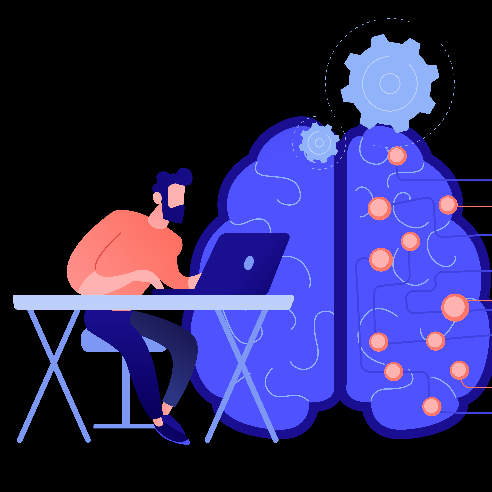

Projelerim

Teslimat Tarihi Tahmin Projesi
Bu proje, Kaggle üzerinden alınan kargo teslim verileri kullanılarak, kargonun zamanında ulaşıp ulaşmayacağını tahmin etmek amacıyla gerçekleştirilmiştir. Bu proje gözetimli öğrenme alanında yaptığım ilk projem bu nedenle gelişime açıktır.